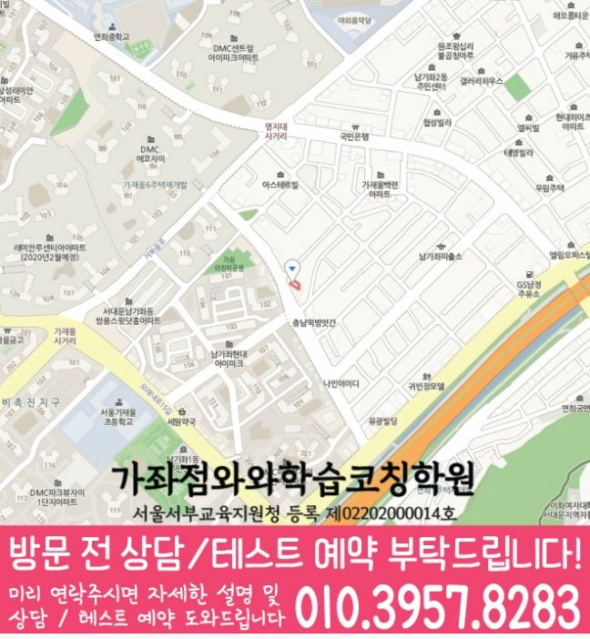

국어 수업 가능 학년
초1 · 초2 · 초3 · 초4 · 초5 · 초6 · 중1 · 중2 · 중3 · 고1 · 고2 · 고3
ACADEMIC SUPPORT LOCAL GUIDE
남가좌동 보습 수업을 비교할 때 살펴볼 학교 진도, 복습·과제·오답 관리, 학년별 수업 정보와 상담 기준을 안내합니다. 센터 위치와 등원 기준도 함께 안내합니다.
30초 핵심 안내
남가좌동에서 보습학원을 찾는 학부모에게 먼저 드릴 답은, 성적 상승 약속보다 진단 근거와 관리 절차가 분명한지를 보라는 것입니다. 이번 페이지의 학생 유형은 예제는 따라 풀 수 있지만 시험 범위를 늦게 정리하는 학생이며, 이 경우 평가 범위가 확인되는 즉시 단원별 할 일을 주간 계획으로 잘게 나누는 과정이 수업 계획에 실제로 들어가는지 확인해야 합니다. 학원출결 안내와 수업 장소 서울 서대문구 가재울로 52 승우빌딩 301호도 같은 기준으로 기록해 비교하면 선택 오류를 줄일 수 있습니다.
남가좌동은 수업 가능 생활권 기준입니다. 실제 방문 센터는 와와학습코칭센터 가좌점이며, 주소와 등록 정보는 아래 센터 기준 정보에서 확인할 수 있습니다.
초1 · 초2 · 초3 · 초4 · 초5 · 초6 · 중1 · 중2 · 중3 · 고1 · 고2 · 고3
초1 · 초2 · 초3 · 초4 · 초5 · 초6 · 중1 · 중2 · 중3 · 고1 · 고2 · 고3
초1 · 초2 · 초3 · 초4 · 초5 · 초6 · 중1 · 중2 · 중3 · 고1 · 고2 · 고3


센터 기준 정보
센터명·주소·등록 정보와 교습비 확인 경로를 상담 전에 살펴볼 수 있도록 정리했습니다.
서울 서대문구 남가좌동 상담 기준
서울 서대문구 가재울로 52 승우빌딩 301호
서울서부교육지원청 등록 제02202000014호
실제 수업 가능 시간은 학년·과목별 일정에 따라 상담에서 확인합니다.
동네명은 수업 가능 지역을 찾기 위한 안내 기준입니다.
가재울초 · 연가초
가재울고
센터명·주소·등록번호·가능 학년·학교 참고 정보는 제공된 센터 자료를 기준으로 정리했으며, 실제 수업 범위와 일정은 상담에서 다시 확인합니다.
지역별 학습 안내
학생의 과목별 학습 상황과 상담 전에 확인할 기준을 여섯 가지 주제로 나누어 정리했습니다.
남가좌동 수업학교 자료에는 가재울초, 연가초 등이 제시되어 있습니다. 서울 서대문구 남가좌동에서는 학교명이 학습 계획의 출발 정보일 뿐 학생의 이해 수준을 대신하지 않으므로 같은 학년이라도 교재 풀이와 오답을 함께 보아야 합니다. 남가좌동 학생은 시험 일정이 공지되면 범위를 기본 확인, 응용, 서술형, 재점검 단계로 나누고 학교 과제와 겹치는 날의 분량을 조정하는 편이 실용적입니다. 남가좌동 상담에서는 제공되지 않은 학교 정보를 임의로 넓혀 해석하지 않는 태도도 신뢰를 판단하는 기준이 됩니다.
“학원출결”은 메시지를 자주 보내는가보다 어떤 정보를 언제 전달하는가가 더 중요합니다. 남가좌동의 학원출결 관련 안내에서는 출결, 과제 미완료, 오답 반복, 일정 변경, 상담 필요 사항을 구분해 전달하는지와 보호자가 답해야 하는 항목이 무엇인지 확인하십시오. 남가좌동 학부모에게는 알림의 양보다 학생의 현재 상태와 다음 행동이 한눈에 보이는 정리가 실용적입니다. 개인정보가 포함될 수 있으므로 수신 대상과 보관 방식도 함께 묻고, 학원출결이 수업 자체를 대신하지 않고 학습 관리에 연결되는지 살펴보아야 합니다.
남가좌동 보습학원의 계획은 현재 학교 진도, 이전 단원의 빈틈과 다음 평가 준비를 한 줄에 섞지 않고 구분해야 합니다. 예제는 따라 풀 수 있지만 시험 범위를 늦게 정리하는 학생에게는 평가 범위가 확인되는 즉시 단원별 할 일을 주간 계획으로 잘게 나누는 과정이 선행 확대보다 우선일 수 있습니다. 남가좌동에서는 현재 학년의 필수 개념을 확인한 뒤 학교 수업에서 바로 쓰일 내용과 장기적으로 보완할 내용을 별도 칸에 배치해야 학생도 공부 이유를 이해하기 쉽습니다. 서울 서대문구 남가좌동의 시험 기간에는 범위 중심으로 비중을 조정하되 시험이 끝난 뒤 누적 오답과 취약 단원을 다시 계획에 넣어야 단기 대비가 일회성으로 끝나지 않습니다.
예제는 따라 풀 수 있지만 시험 범위를 늦게 정리하는 학생은 “공부를 안 한다”는 한 문장으로 설명하기 어렵습니다. 남가좌동 상담에서는 결과 점수와 함께 언제 풀이를 시작했고 무엇을 질문했으며 왜 과제를 남겼는지 구체적으로 확인합니다. 남가좌동에서 우선 적용할 방법은 평가 범위가 확인되는 즉시 단원별 할 일을 주간 계획으로 잘게 나누는 과정입니다. 서울 서대문구 남가좌동 학생은 현재 학년 내용을 자신의 말로 설명하고 비슷한 문제를 혼자 풀 수 있는지를 확인한 뒤 다음 진도를 정하는 편이 안전합니다.
남가좌동 보습학원 상담 답변을 구체화하려면 최근 평가 결과, 풀고 있는 교재, 학교 일정과 등원 가능 요일을 먼저 준비해야 합니다. 남가좌동 학부모가 답변을 기록할 때는 첫째 진단 방식, 둘째 수업 인원과 개별 확인 범위, 셋째 과제·오답 처리, 넷째 결석 보강, 다섯째 피드백 주기, 여섯째 비용·변경·환불 기준을 같은 순서로 묻는 것이 좋습니다. 학원출결 설명은 구두 약속으로 끝내지 말고 적용 대상, 시작 시점, 예외 상황과 확인 방법을 기록해 두십시오. 남가좌동에서 질문을 준비할 때는 상담 당일 성적 상승 폭이나 입시 결과를 단정하는 표현보다 현재 자료를 근거로 조정 가능한 계획을 제시하는지를 선택 기준으로 삼으십시오.
검색 기준 지역은 서울 서대문구 남가좌동이지만 제공된 학원 주소는 서울 서대문구 가재울로 52 승우빌딩 301호이므로 동네 키워드만으로 거리를 판단해서는 안 됩니다. 서울 서대문구 남가좌동 학부모가 이동 시간을 계산할 때는 학생이 실제로 출발하는 곳이 학교인지 집인지에 따라 체감 이동은 달라지므로 요일별 출발 지점을 따로 적어 보십시오. 남가좌동 등원 계획에서는 학교 수업이 늦는 날, 과제나 동아리 일정이 있는 날, 보호자 픽업이 어려운 날을 구분해 등원 가능 시간을 계산해야 합니다. 남가좌동에서 가장 바쁜 요일에도 지속 가능한지가 가까워 보이는 인상보다 중요한 선택 기준입니다.
FAQ
학교 정보는 계획의 출발점일 뿐이며 학교 과제와 보습 복습량이 겹치는 날의 분량을 조정해야 합니다. 남가좌동 페이지에 제공된 학교 정보는 가재울초, 연가초입니다. 남가좌동 내신 계획은 학교명보다 실제 교과서·범위표·평가 일정에 맞추어야 하며, 제공 목록에 없는 학교의 수업 여부는 상담에서 다시 확인해야 합니다.
남가좌동 보습학원에서 학교 진도를 반영할 때에는 학교명보다 학생의 실제 자료로 준비 순서를 다시 정해야 합니다. 학생의 현재 상태와 평가 난도, 확보한 학습 시간이 모두 달라 남가좌동 상담에서 향상 폭을 사전에 보장하기는 어렵습니다. 남가좌동 학생은 시험 범위를 단원별 계획으로 바꾸는 데 걸리는 시간 같은 과정 지표와 학교 평가를 함께 추적하며 계획을 조정하는 설명이 더 현실적입니다.
같은 학교나 학년이라도 평가 자료가 달라질 수 있어 학교명보다 학생의 실제 자료로 준비 순서를 다시 정해야 합니다. 남가좌동 페이지에 제공된 주소는 서울 서대문구 가재울로 52 승우빌딩 301호입니다. 남가좌동에서는 학교에서 출발하는 날과 집에서 출발하는 날을 나누고, 가장 늦은 요일의 수업 종료·귀가 시간과 편의 서비스 제공 여부를 확인해야 합니다.
첫 상담에서는 학생의 어려움을 막연한 태도 문제로 보지 말고 학생이 말한 어려움과 보호자가 관찰한 문제를 따로 기록해야 합니다. 예제는 따라 풀 수 있지만 시험 범위를 늦게 정리하는 학생이라면 현 학년 진도의 취약 부분을 나누어 보고 평가 범위가 확인되는 즉시 단원별 할 일을 주간 계획으로 잘게 나누는 과정을 실제 수업과 과제에 연결하는지를 우선 확인하는 편이 좋습니다.
남가좌동 학부모가 조건을 비교할 때에는 설명받은 조건을 한 문서에 정리해 변경 시점까지 확인해야 합니다. 남가좌동 상담에서는 알림 횟수보다 출결, 과제, 오답, 일정 변경과 다음 행동이 구분되어 전달되는지, 개인정보 수신 범위가 적절한지 보십시오.
상담 상황 예시
남가좌동 상담 전에 재학 학교 자료와 최근 오답을 함께 준비하라는 안내가 도움이 됐습니다. 아직 결과를 단정할 수는 없지만, 남가좌동에서 학원출결과 과제·피드백 기준을 같은 질문으로 비교하니 무엇을 확인해야 하는지가 명확했습니다.
아이의 점수만 설명하기보다 예제는 따라 풀 수 있지만 시험 범위를 늦게 정리하는 학생이라는 상황을 풀이 과정과 과제 기록으로 나눠 보니 상담 질문이 분명해졌습니다. 남가좌동 상담에서는 당장 성적을 약속하기보다 시험 범위를 단원별 계획으로 바꾸는 데 걸리는 시간을 먼저 보자는 점이 부담을 줄여 주었습니다.
아래 두 문장은 실제 이용자의 인용이 아니라, 남가좌동 학부모가 상담 후 남길 수 있는 후기 형식의 예시입니다.